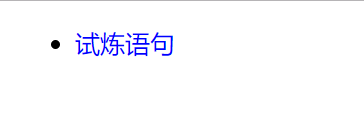

原文出处:本文由博客园博主心悦君兮君不知-睿提供。
原文连接:https://www.cnblogs.com/ruigege0000/p/11306527.html
原文连接:https://www.cnblogs.com/ruigege0000/p/11306527.html
一、什么是优先级的权重
1.作用：当多个选择器混合在一起的时候，我们可以通过计算权重来判断谁的优先级最高。
2.权重的计算规则
公共代码：
<body>
<div id="identity1" class="box1">
<ul>
<li>
<p id="identity2" class="box2">试炼语句</p>
</li>
</ul>
</div>
</body>
（1）首先计算选择器中有多少个id，id多的选择器优先级最高；
例子：
#identity1 .box2{
color: red;
}
.box1 .box2{
color: blue;
}
（2）如果id选择器同样多，那么类选择器多的优先级高
.box1 .box2{
color: blue;
}
div ul li p{
color: purple;
}

（3）如果类名的个数也一样多，那么标签个数多的个数多的优先级高
#identity1 ul{
color: red;
}
#identity1 ul li p{
color: purple;
}
（4）如果上述三条全都一样，那么谁在后面听谁的
#identity1 ul li{
color: blue;
}
#identity1 ul p{
color: red;
}
3.注意：只有选择器是直接选中标签的才需要计算
#identity1{
color: blue;
}
p{
color: red;
}二、源码：
d88&89_the_weiht_of_selector.html
地址:
https://github.com/ruigege66/HTML_learning/blob/master/d88%2689_the_weiht_of_selector.html
2.CSDN：https://blog.csdn.net/weixin_44630050（心悦君兮君不知-睿）3.博客园：https://www.cnblogs.com/ruigege0000/
4.欢迎关注微信公众号：傅里叶变换，后台回复“礼包”获取Java大数据学习视频礼包